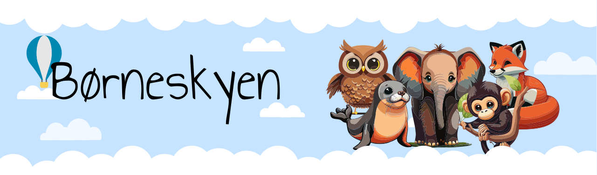

Formål
I dette projekt var formålet at gøre Destination sønderjyllands webside for Sønderborg mere attraktiv for børnefamilier. Målet var at skabe en platform, der inspirerede familier til at vælge Sønderborg som feriedestination, samtidig med at både børn og voksne blev engageret i planlægningen. Hjemmesiden skal ikke kun opfordre til valg af destinationen, men også tilbyde inspiration til aktiviteter, hvor børnene kan deltage aktivt i beslutningsprocessen.
Persona
Vi startede projektet med at udvikle en persona, der hjalp os med at forstå målgruppens behov og sikre, at designet blev tilpasset børn og deres præferencer.
Konceptudvikling
Ved hjælp af forskellige ideation-metoder udviklede vi et koncept, hvor børn kan identificere sig med et dyr, der repræsenterer en aktivitetskategori. Hver dyrefigur skaber en emotionel forbindelse, hvilket gør det lettere for børnene at vælge aktiviteter, der interesserer dem. Børnene får også mulighed for at favorisere de aktiviteter, de gerne vil, og disse tilføjes til en ønskeliste. Denne børneside skal fungere som en parallel side til den eksisterende side for Destination Sønderborg og vil blive præsenteret der med et banner samt et punkt i menuen.
Wireframe og første design
Vi startede med wireframes og eksperimenterede derefter med forskellige farver og baggrunde, samtidig med at vi tilføjede skyer for at skille kategorierne ad. Vi designede en onepage, så brugerne nemt kunne se de andre kategorier.
Designsystem og componentets
Vi har oprettet et designsystem i Figma, som bruges til at skabe sammenhæng og effektivitet i designprocessen. Det omfatter teksttokens, colortokens og genanvendelige komponenter, som sikrer ensartede visuelle elementer. Dette gør det også mere effektivt at implementere designet i kode efterfølgende.

Brugertest
Vi har gennemført en think aloud brugertest med børn i forskellige aldre for at evaluere deres forståelse af vores koncept. Resultatet viste, at børn er mere visuelle, end vi først antog; de fokuserede primært på billederne frem for at læse teksten. Dette understreger vigtigheden af visuelle elementer i vores design
Vidreudvikling
I den videre udvikling af vores koncept har jeg lagt større vægt på det visuelle ved at bruge billeder, så det bliver tydeligere, hvad de forskellige dyr repræsenterer, og for at gøre det nemmere for børnene at vælge en af dem. Testen viste også, at børnene scrollede forbi dyrene, da siden var en onepager. I den nye version er tanken, at man først skal vælge et dyr, hvorefter man kommer ind på en ny side.
Derudover har jeg i den nye version også udforsket brugen af parallax scrolling, så der sker noget, når man scroller ned. Jeg har tilføjet en regnbue, der strækker sig ned igennem skyerne for visuelt at lede brugeren til at scrolle videre, samtidig med at den vækker nysgerrighed omkring, hvad der gemmer sig under skyerne.
Se næste projekt